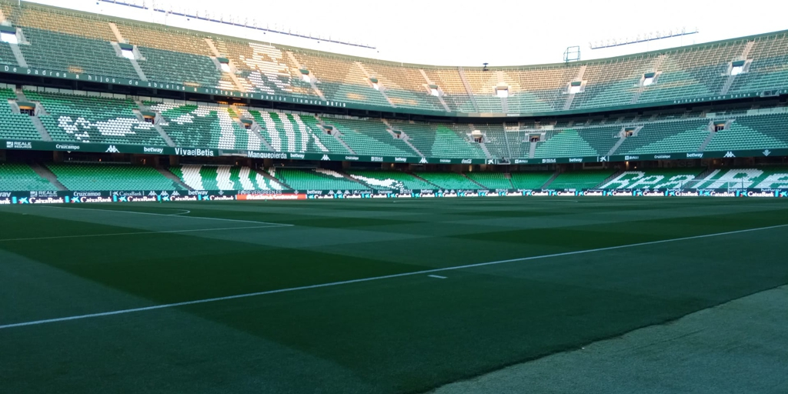

Pasión verdiblanca desde 1907
Explora les coses sobre el betis!
Pasión verdiblanca desde 1907
Fundado en 1907 en Sevilla, el Real Betis Balompié es uno de los clubes más históricos y queridos del fútbol español. Representa la pasión andaluza con una afición fiel y un lema inquebrantable: “¡Viva el Betis manque pierda!”.
El Real Betis ha vivido momentos de gloria que quedarán para siempre en la historia:
El Estadio Benito Villamarín, ubicado en el barrio de Heliópolis, es el hogar del Betis. Con capacidad para más de 60.000 espectadores, ha sido testigo de innumerables emociones verdiblancas.
